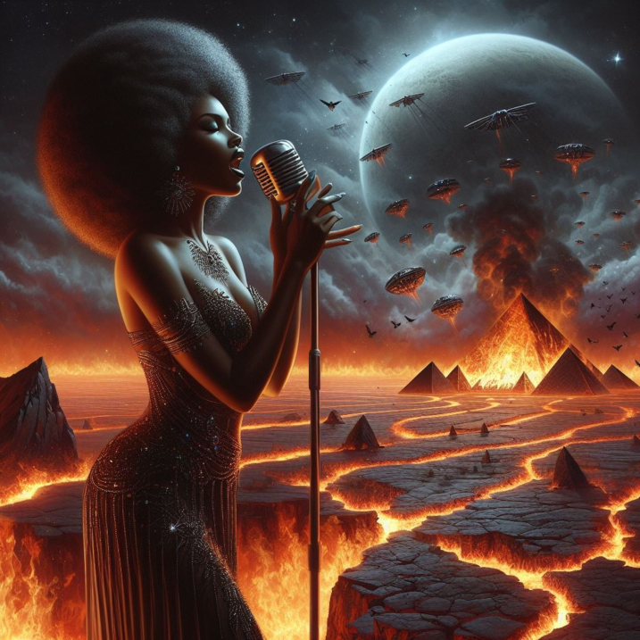
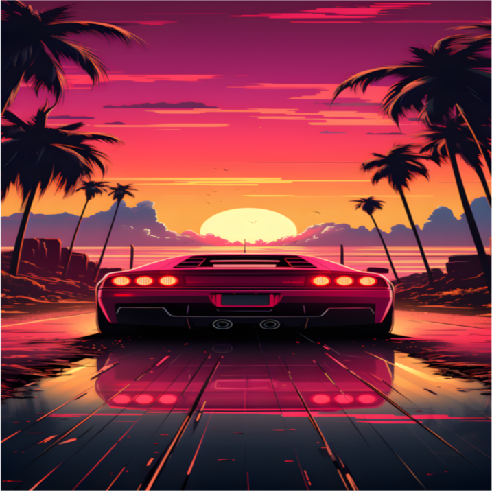
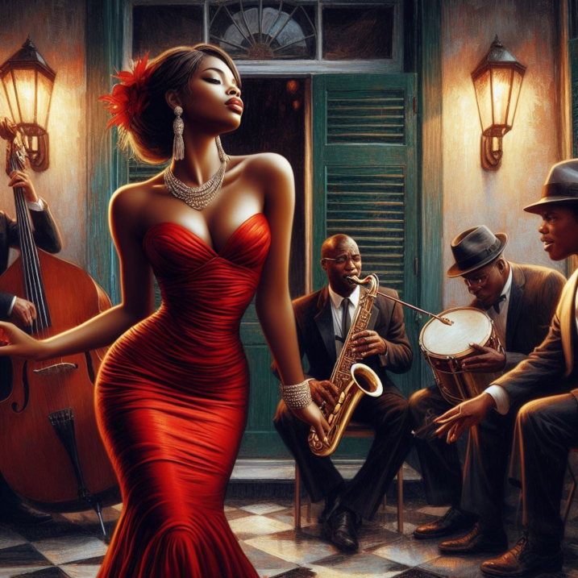

Hip-Hop Classics
Built for heavy drums, iconic bars, and the records that helped shape hip-hop culture. Hip-Hop Classics keeps the energy high with a rotation rooted in timeless impact.
Every MusicMixx station is built around a different mood, sound, and listening environment. Whether you want something soulful, high-energy, cinematic, or laid-back, there’s a station ready to match the moment.
Built for heavy drums, iconic bars, and the records that helped shape hip-hop culture. Hip-Hop Classics keeps the energy high with a rotation rooted in timeless impact.

A smooth blend of classic soul, rich vocals, and R&B warmth. Soul Sessions is the station for slow grooves, emotional storytelling, and records that stay with you.
Big guitars, sharp hooks, and driving momentum. Classic Rock is made for loud speakers, long roads, and listeners who want rock with weight and attitude.
Fast rhythms, digital textures, and sleek late-night energy. Electro Pulse delivers a modern electronic feel that stays crisp, rhythmic, and in motion.

Moody, atmospheric, and built for after-dark listening. Night Drive blends calm motion and neon energy into a station that feels best when the world gets quieter.

Soft instrumentation, elegant pacing, and easy late-evening warmth. Smooth Jazz Lounge is your place for cool tones, relaxed listening, and a refined musical backdrop.
Use this chart to compare the sound and mood behind each MusicMixx station at a glance.
| Station | Genre | Mood | Suggested Listener |
|---|---|---|---|
| Hip-Hop Classics | Classic Hip-Hop | Bold / High Energy | Listeners who want iconic beats, lyrical presence, and hip-hop heritage |
| Soul Sessions | Soul / R&B | Warm / Intimate | Listeners who want vocals, groove, and emotionally rich records |
| Classic Rock | Rock | Driven / Loud | Listeners who want guitars, momentum, and big chorus energy |
| Electro Funk | Electronic | Fast / Futuristic | Listeners who want sleek rhythm, synth textures, and dance-floor motion |
| Night Drive | Ambient / Chill | Moody / Cinematic | Listeners who want reflective, after-hours sound with atmosphere |
| Smooth Jazz Lounge | Jazz | Relaxed / Sophisticated | Listeners who want mellow instrumentation and a smooth unwind |